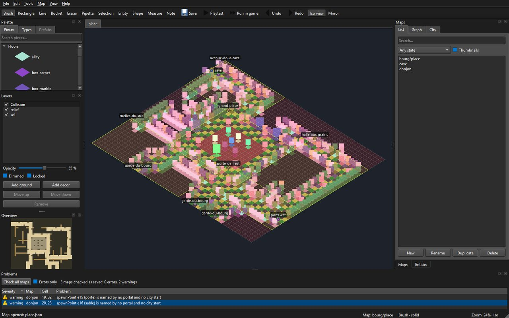
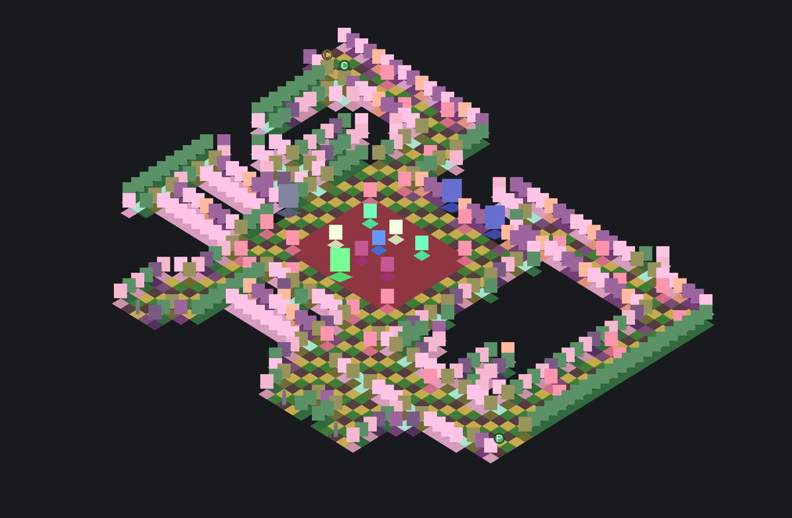

Faire une carte dans l'éditeur
Guide d'usage de l'auteur, écrit au LOT-EDITOR-06. Depuis ce lot, l'éditeur fait foi pour les cartes faites à la main (décision D4) : aucun script ne les écrit plus. Le fonctionnement interne de l'outil est dans Éditeur de niveaux ; ses commandes, dans le README du module,
Source/Editor/README.md.
Une carte se fait en sept temps : la créer avec son lieu, poser le sol, dresser le relief, placer l'entrée, poser les entités, l'essayer, l'enregistrer et la contrôler. Exemple suivi : une petite échoppe de Martpart, 12 × 8 cases.
0. Ouvrir l'éditeur sur le dépôt
Construire (scripts/build.ps1), puis lancer build\ninja\bin\LevelEditor.exe. L'éditeur ouvre les données de l'arbre des sources qui l'a construit — Source/Elements —, et non la copie que la construction refait à côté de l'exécutable : ce qu'on enregistre arrive dans le dépôt, et la construction suivante ne l'écrase pas. Le titre de la fenêtre dit quel dossier est ouvert ; --data <dossier> en ouvre un autre.


Six panneaux, qu'on retrouvera tout au long de cette page : Palette (les pièces), Layers (les couches), le canevas au centre, Maps (les cartes du dépôt), Entities · Inspector (ce qu'on a posé) et Problems (ce qui cloche). Ils se déplacent, se détachent et se referment ; la disposition est retenue d'une session à l'autre.
1. Créer la carte, avec son lieu
Panneau Maps, onglet List, bouton New : un nom (echoppe), une taille en cases, un lieu — la planche dont la carte prendra ses pièces, choisi dans l'arbre des lieux que la boîte New map propose (central-empire/capital/martpart, central-empire/capital/arenarea…) — et un modèle. Sans modèle, la carte naît comme les cartes livrées : une couche de sol sol qui nomme le lieu, une couche de décor relief, et une collision déduite où tout, encore vide, arrête la vue — sauf l'entrée, au coin bas gauche, posée sur une case de terre. Avec un modèle (LOT-EDITOR-08) — Interior, Street, Arena —, elle naît avec sa taille, ses murs et son entrée déjà posés ; choisir le modèle reprend sa taille, qu'on peut encore changer, et ce qu'il ne couvre pas reste plein. Double-cliquer la carte dans la liste l'ouvre.
Sans lieu (« none »), on peint des types en couleurs sur une grille unique : c'est la maquette, et c'est la première étape légitime d'une carte du jeu (décision D-22) — sa physique se dessine et se joue avant ses textures ; les cartes de la démo sont nées ainsi, puis Change sheet… (ci-dessous) leur a donné leur lieu et leurs pièces.
Une carte d'un quartier va dans le sous-dossier de son lieu (central-empire/capital/…) : la boîte New map l'y range d'elle-même, et Rename (ci-dessous) prend l'identifiant complet, central-empire/capital/echoppe, si le fichier doit changer de dossier.
2. Poser le sol
Panneau Palette, onglet Pieces : la planche du lieu, groupée par classe, avec une recherche. Une pièce de sol va d'elle-même sur la couche sol. Les outils, à leur touche :
| Touche | Outil | Pour |
|---|---|---|
R | rectangle | le sol d'une pièce, d'une rue, d'une place |
B | pinceau | les variantes de pavé, une case à la fois |
G | seau | remplir une surface d'un seul sol |
L | ligne | une rangée droite |
E | gomme | retirer une pièce entière, emprise comprise |
I, ou Alt + clic | pipette | reprendre la pièce d'une case |
Un geste, du clic au relâchement, se défait d'un Ctrl+Z. La collision suit chaque geste : une case qui reçoit un sol devient franchissable.
3. Dresser le relief
Toujours dans Pieces : murs, fenêtres, portes, angles, lanternes, étals. Une pièce debout va sur relief. Une pièce large (une devanture, un grand étal) occupe deux cases, depuis la case où on la pose ; poser une pièce sur une emprise déjà prise retire celle qui y était. Le miroir (M, par la case survolée) pose la jumelle de chaque pièce de l'autre côté d'un axe : une façade symétrique se dresse d'un seul trait.
F9 bascule entre l'isométrie (ce que le jeu montrera) et la vue à plat, où l'on lit les types et la collision ; F8 rend le relief transparent pour voir le sol dessous.
4. Placer l'entrée
Panneau Layers : choisir la couche Collision, puis dans Palette, onglet Types, le marqueur Entry, et cliquer la case où le héros apparaît. Une carte n'a qu'une entrée : la reposer la déplace. Peindre la collision ailleurs force la case ; la gomme la rend à la déduction. On ne force qu'en dernier recours : une case forcée ne suit plus les pièces.
5. Poser les entités
Outil Entité (O), puis une famille dans la liste Place du panneau Entities : un PNJ (son dialogue, sa figurine), un coffre, un point d'arrivée (spawnPoint, nommé), un portail (portal : la carte visée et le point d'arrivée de l'autre côté), une zone de combat qu'on tire d'un coin à l'autre, une rencontre (encounter, les créatures qu'elle lève). Une rencontre engage le combat sur la zone de combat de la carte, comme l'action de dialogue startEncounter d'un PNJ (LOT-118) : c'est ce que le jeu joue quand Run in game l'ouvre. L'inspecteur propose les valeurs que les catalogues connaissent ; ses avertissements disent ce qui manque, et une zone de combat donne son verdict tactique pendant qu'on la tire. Une entité reçoit un identifiant (e12) qu'elle garde : c'est par lui que l'éditeur la retrouve et la renomme (Map › Who cites the selected entity?, Rename entity id…, --who-cites entity).
Pour relier deux cartes, le plus court est le graphe du monde (ci-dessous) : il pose les deux paires d'un geste. À la main, poser un portail et un point d'arrivée de chaque côté.
6. Essayer
P lance l'essai immédiat depuis l'entrée, Shift+P depuis la case survolée : on marche, on passe les portails, sans quitter la fenêtre. C'est l'outil de la marche et des portails.
Pour le vrai jeu, Map › Run in game (F5) lance JustAnotherRpgGame sur la carte ouverte : il s'ouvre directement dessus, sans passer par ses menus, avec ses dialogues, ses écrans et son rendu. Maj+F5 part de la case survolée ; Ctrl+F5 ouvre d'abord un dialogue où l'on choisit la case de départ et l'état de partie — la même carte avant et après une quête.
L'état de partie
Map › World state… règle l'état dont partent P et F5 : une valeur pour chaque drapeau qu'une quête déclare (quete.pommes : inconnue, acceptee…), les faits acquis à cocher, et ceux qu'on écrit à la main. Coché Show the map under this state, le canevas montre la carte dans cet état : ce qui en est absent — le garde avant acceptee, la porte ouverte après enfant-libere — ne se dessine plus, et son marqueur est grisé. Rien n'est rechargé : on change d'état, la carte suit.
Ce qu'une quête pose sur une carte s'écrit à l'inspecteur, sans toucher au JSON :
- une condition de présence sur toute entité (
presenceFlag,presenceTest,presenceValue), dont les valeurs sont celles que la quête déclare ; - un décor qui change : la famille
prop, une pièce du lieu posée comme entité — choisir sa pièce lui donne son emprise, qui arrête le pas tant qu'elle est là ; - un portail condamné (
sealed) : l'escalier est posé, il ne mène nulle part, et le graphe le montre en pointillé ; - un déclencheur de zone : un dialogue, un drapeau posé, un transfert vers une carte et un point d'arrivée, à l'entrée du héros.
Ce qui est joué, ce sont les brouillons de tous les onglets ouverts, écrits dans un dossier temporaire hors du dépôt : la retouche qu'on vient de faire se voit sans enregistrer, et la carte d'à côté aussi quand on passe son portail. Deux choses restent celles de la dernière construction : les catalogues du jeu (dialogues, rencontres, figurines, villes, assets) et son propre Levels/ pour les cartes qu'aucun onglet ne porte. Un essai n'enregistre rien, et fermer l'éditeur ferme le jeu.
Le canevas montre la carte comme le jeu la jouera : mêmes pièces, même ordre de dessin, même projection. Ce n'est pas une vue d'édition qui ressemblerait au jeu — c'est le même code de composition, ce qui interdit à l'éditeur de vous montrer quelque chose que le jeu démentira.


7. Enregistrer, contrôler, publier
Ctrl+S enregistre, après validation : une carte que le jeu refuserait ne s'écrit pas. Puis, dans un terminal à la racine du dépôt :
build\ninja\bin\LevelEditor.exe --check
build\ninja\bin\LevelEditor.exe --render echoppe --scale 0.5 --output echoppe.png
build\ninja\bin\LevelEditor.exe --render echoppe --hour 21:30 --output echoppe-nuit.png--hour HH:MM éclaire le rendu comme le jeu l'éclaire à cette heure ; sans elle, la carte se rend sans éclairage. LevelEditor --map=echoppe --hour=21:30 ouvre la fenêtre l'éclairage allumé.
--check contrôle toutes les cartes — format, pièces, collision, identifiants, puis ce qui se joue : références des entités, rencontres, cases utiles hors d'atteinte, portails sans retour, clés de traduction — et c'est ce que la CI exige. Dans la fenêtre, le même contrôle remplit le panneau Problems, en bas : au lancement, à chaque enregistrement, et par Map › Check all maps. Un double-clic sur un constat ouvre sa carte, sélectionne l'entité et cerne la case en magenta. Le panneau lit les cartes enregistrées ; les avertissements en direct de la carte ouverte restent dans le panneau Entities.
Le nom d'une carte n'est pas du texte mais une clé, map.<identifiant>.name : « New » l'écrit dans Source/Elements/Localization/fr.lang et en.lang avec le nom tapé ; il reste à y mettre le vrai nom, dans chaque langue. --render rend la carte en PNG, comme elle rendra dans la PR : la CI publie le rendu de chaque carte qu'une PR change (artefact map-renders). La carte se relit alors en diff : le fichier est canonique, une retouche ne change que ses cases.
Retoucher en masse, sans la souris
Ce que la main fait se rejoue par fichier : LevelEditor --apply gestes.json appelle les mêmes fonctions que les outils, dans le même ordre, et ne touche pas au fichier si un geste est refusé. C'est la façon de faire une retouche relue en diff, ou de répéter un geste sur plusieurs cartes. Les trois retouches du LOT-EDITOR-06 en sont des exemples (Planning/versions/v0.0.0/v0.0.0-fondation/annexes/LOT-EDITOR-06-fin-des-scripts/retouches/), le format est décrit dans Source/Editor/Logic/GestureScript.h.
Répéter ce qu'on a composé : tampons et préfabriqués
Une échoppe, un étal, une cour se composent une fois (LOT-EDITOR-08) :
- Outil Sélection (
S), tirer autour de ce qu'on veut reprendre, puisCtrl+C. Le tampon emporte tout : les types de chaque couche, les pièces qui y sont ancrées — entières, le rectangle s'agrandissant jusqu'à leur emprise —, les entités et les cases de collision forcées. La barre d'état dit ce qu'il porte (3 × 2 · 2 pieces · 1 entity). Ctrl+Vle pose, coin haut gauche sur la case survolée, en un pas : unCtrl+Zdéfait tout. Chaque entité posée reçoit un identifiant neuf ; l'entrée, elle, n'est jamais emportée.Ctrl+Maj+Vpose le reflet du tampon : il passe de w × h à h × w et chaque pièce prend sa jumelle, comme le miroir du pinceau.- Un tampon remplace ce qu'il couvre, cases vides comprises : serrer la sélection.
Ctrl+Maj+S(Edit › Save selection as prefab…) l'enregistre comme préfabriqué du lieu, sous un nom de minuscules, de chiffres, de tirets et de tirets bas. L'onglet Prefabs de la palette montre alors la bibliothèque du lieu, chacun avec une vignette rendue de son propre contenu ; le choisir arme le tampon,Ctrl+Vle pose. Les préfabriqués sont des fichiers, dansSource/Elements/Editor/Prefabs/<lieu>/: on les renomme et on les supprime à l'explorateur.- Sans fenêtre :
LevelEditor --list-prefabsetLevelEditor --save-prefab central-empire/capital/martpart etal --from 21,24 --to 21,24.
Renommer, remplacer, changer de planche
Un nom qui change ne casse rien (LOT-EDITOR-14) :
- Rename (panneau Maps ou menu File) prend l'identifiant complet, dossier compris (
capital/echoppe). Portails, variantes, villes et la clé du nom dans chaque catalogue suivent, l'annexe des notes aussi. Une boîte montre d'abord tout ce qui sera récrit. - Menu Map : Who cites this map?, Who cites the selected entity? listent les citations ; un double-clic y mène. Rename entity id… et Rename arrival point… renomment l'entité sélectionnée et ce qui la cite.
- Replace piece… remplace une pièce par une autre de la planche, sur la carte ouverte (en un pas,
Ctrl+Zle défait) ou sur toutes les cartes qui la posent. - Change sheet… fait passer la carte à une autre planche : chaque pièce va à son homonyme, et la table du dialogue donne les autres ; on ne valide qu'une table sans trou. Un pas, lui aussi.
Tout ce qui récrit d'autres fichiers demande d'abord d'enregistrer la carte ouverte, et un refus (nom pris, carte illisible, pièce sans correspondant) n'écrit rien. Les mêmes commandes existent sans fenêtre : --rename-map, --rename-arrival, --rename-id, --who-cites, --replace-piece, --change-scene (voir Source/Editor/README.md).
Plusieurs cartes à la fois, et le monde autour (LOT-EDITOR-09)
- Les cartes s'ouvrent en onglets. Chacune garde son brouillon, son historique, son cadrage et sa sauvegarde automatique ; l'onglet porte le nom court de la carte, suivi d'une étoile tant qu'elle est modifiée. Ouvrir une carte déjà ouverte revient à son onglet. File › Close tab (
Ctrl+W) ferme celui du dessus — le dernier reste, et fermer un onglet modifié demande d'abord quoi faire de son brouillon. - Relier deux cartes d'un geste. Panneau Maps, onglet Graph : tirer d'une carte à une autre. L'éditeur montre ce qu'il va écrire — sur chacune, le portail qui mène à l'autre et le point d'arrivée que l'autre cite (
from-martpart) —, puis l'écrit. La paire se pose au plus près de l'entrée, sur des cases libres et atteignables :Ptraverse aussitôt, dans les deux sens, et l'outil Entité déplace ensuite la porte où on la veut. Sans fenêtre :LevelEditor --link-maps central-empire/capital/martpart central-empire/capital/arenarea. - Voir une ville par quartiers. Onglet City : le plan peint de la ville, les cadres de ses quartiers, leur nom ; un quartier tireté n'a pas (encore) sa carte, ou n'est qu'une porte gardée. Double-cliquer un quartier ouvre sa carte dans son onglet.
- Dire ce qu'est une carte. Map › Map properties… montre son lieu (la planche ; en changer, c'est Change sheet…), et édite sa région, son ambiance, son heure fixe — trois propriétés de la carte, enregistrées avec elle — et son état : générée, retouchée, finie. L'état est une note d'auteur : il va dans l'annexe
<carte>.editor.json. L'heure fixe (Fixed hour, écriteHH:MM) montre toujours la carte à cette heure, quelle que soit celle du monde : un sous-sol reste dans la nuit de ses torches. Vide, la carte suit l'heure du monde. - Voir la carte de nuit. Dans la barre d'outils, cocher Lighting éclaire le canevas comme le jeu l'éclaire — soleil, ombres, lumières de nuit —, et le curseur à côté règle l'heure, par quart d'heure. Décochée, la carte se montre telle que ses pièces sont peintes. Playtest part de l'heure du curseur ; l'essai, lui, est toujours éclairé.
- Poser une lumière. Un lampadaire, une lanterne, un brasero éclairent d'eux-mêmes : leur pièce le déclare. Pour ce qu'aucune pièce ne porte — la lueur d'une fenêtre, un feu —, l'outil Entité pose la famille light : sa couleur (
#rrggbb), sa portée en cases (radius), sa hauteur en décimètres (height), son intensité en pour cent, si elle tremble (flicker) et si elle reste allumée en plein jour (always). Elle ne s'allume qu'au crépuscule, sauf always. - Voir où en est le monde. Dans la liste des cartes, l'état paraît à côté du nom, le menu déroulant filtre par état, et Thumbnails montre chaque carte en vignette — le même rendu que
--render.
Écrire une quête : le panneau Quests (LOT-144)
Une quête s'écrit à côté des cartes qu'elle traverse, sans ouvrir son JSON. Le panneau Quests est un onglet à côté de Maps et Entities ; on l'élargit ou on le détache à loisir.
- Choisir, créer, renommer, retirer. La liste en tête nomme les quêtes de
World/quests. New… demande un identifiant (minuscules, chiffres,-,_) ; Rename… et Delete… montrent d'abord tout ce qu'ils récrivent — le fichier, les clés du journal, le dialogue qui la démarre — comme un renommage de carte. - Onglet Quest. Le nom de travail, la source, le titre du journal dans chaque langue, et les drapeaux déclarés : un identifiant (
quete.pommes), ses valeursa|b|c, l'initiale. Un drapeau déjà enregistré ne se renomme pas dans la case : Rename flag… et Rename value… le suivent dans les cartes, les dialogues et les autres quêtes. Uses montre qui s'en sert. - Onglet Steps. Les étapes dans l'ordre du récit (Up, Down). Pour l'étape choisie : son identifiant, où elle se joue (une entité
carte#id, facultatif ; Go y mène), ses conditions — un drapeau, un test (is set,is not set,equals,not equals), des valeursa|bprises parmi celles que le drapeau déclare —, ses effets (setFlag,clearFlag), l'issue qui clôt la quête et le texte du journal dans chaque langue. - Play this step règle l'état de partie de tous les onglets sur des valeurs qui atteignent l'étape : sous « acceptee », le garde et l'enfant paraissent au parvis d'Arenarea.
PetF5partent de là, comme de Map › World state…. - Onglet Uses. Pour un drapeau, et au besoin une valeur : chaque entité, dialogue ou quête qui le déclare, le lit ou le pose. Un double-clic ouvre la carte sur l'entité.
- Save écrit la quête sous sa forme canonique et ses textes dans chaque catalogue. Ce que le jeu refuserait — une étape sans condition, une valeur que le drapeau ne déclare pas, un drapeau déjà déclaré ailleurs — ne s'enregistre pas, et le message nomme l'étape. Revert relit le fichier.
Sans fenêtre : --who-cites flag, --rename-flag, --rename-flag-value, --rename-quest, --save-quest, --quest-state (voir Source/Editor/README.md). Les dialogues, eux, restent écrits à la main (décision D-24) : le panneau montre ceux qui lisent ou posent un drapeau, il ne les édite pas.
Écrire la fiche d'un personnage : la fenêtre Asset workshop (LOT-1008)
Un personnage est une fiche qui lie un modèle, son portrait et son jeton (Planning/standards/personnages-3d.md). Assets › Asset workshop… ouvre l'atelier, une fenêtre à part de la carte, en trois colonnes :
- Installed characters, à gauche : les personnages en modèle de tous les niveaux. En choisir un rouvre sa fiche telle qu'elle est installée, les sources retrouvées dans l'atelier local (Workshop folder…,
Tools/Assets3Dpar défaut). - La fiche d'atelier, au centre. Level est le dossier
Charactersdu niveau, Name le personnage (bandit,Heroes/brawler), Skeleton sa silhouette. Linked model est le.glblié par la chaîne (rig_character.py), Portrait (512) et Token (128) ses images, déjà aux tailles du standard : l'atelier ne retaille rien, il range. Un champ vide garde ce qui est installé. Save sheet écrit la fiche en JSON à côté des sources (<nom>.character.json), Install in the game écrit le personnage sousAssets/et l'inscrit au manifeste de son niveau — exactement ce que faitLevelEditor --apply <fiche>sans fenêtre, à l'octet près. Une fiche refusée n'écrit rien, et le compte rendu, sous les boutons, dit pourquoi (un portrait qui n'est pas en 512 × 512, un modèle sans squelette, un clip que la silhouette déclare et que le modèle n'a pas). - L'aperçu, à droite : le modèle, dessiné par le rendu du jeu sur un damier de maquette, clip par clip (Clip), Play le fait tourner, Quarter turn le fait pivoter. Ce qu'on y voit est ce qu'on jouera. Light choisit l'heure à laquelle il est éclairé — midi, l'aube, le crépuscule, la nuit — ou l'éteint (Unlit) : un modèle se juge éclairé (
LOT-1007).
Régler le squelette et les clips dans Blender (décision D-44). Le groupe Blender round trip demande le maillage reçu (celui que la chaîne lie) et la fiche de liaison du personnage. Edit in Blender ouvre le modèle lié dans Blender — maillage, 53 os, une action par clip, à 60 images par seconde — et note, à côté du .blend, un repère de ce que Blender a lu. On y déplace une articulation en mode Édition de l'armature, on y change les clés d'une action en mode Pose, on enregistre (Ctrl+S). Import from Blender relit le fichier, le compare au repère et ne retient que ce qui a changé : une articulation déplacée revient dans la fiche de liaison, un clip modifié dans la fiche de retouche (retouche.json, à côté), puis le modèle est relié par la chaîne et contrôlé — un écart au standard (sol traversé, pied qui glisse) refuse l'import et le dit. Rien ne revient de Blender qu'en données : ni maillage, ni poids, ni .glb exporté par lui. Ce qu'il ne sait pas dire au jeu — un os translaté ou mis à l'échelle, un doigt animé — est signalé et ignoré. Le détail est dans scripts/assetsGeneration/retouch_character.py.
Check installed characters relit tout ce qui est installé : fiche, squelette, modèle et ses clips, portrait et jeton aux bonnes tailles — ce que LevelEditor --check ajoute au contrôle des cartes.
Ce qui ne se fait pas encore dans l'éditeur
- Composer un ensemble de décor en maillages (la vue Scenery de l'atelier) : avec le kit en maillages, à la
0.0.3(décision D-43,LOT-151).
- Semer une forêt ou une prairie sans perdre les retouches :
LOT-168du planning (LOT-EDITOR-11, qui pilotait un générateur, est abandonné).
Créer ou redimensionner sans fenêtre
LevelEditor --data Source/Elements --new catacombs --scene central-empire/capital/arenarea/arena-of-fate/catacombs --width 34 --height 24 crée une carte vide avec les couches et la clé de traduction habituelles, par la même opération que la fenêtre. Un nom déjà présent est refusé. Le dossier suit le lieu indiqué par --scene.
LevelEditor --data Source/Elements --resize central-empire/capital/arenarea/arena-of-fate/undercroft --width 34 --height 24 agrandit toutes les couches en conservant leur contenu et les entités. Une réduction est refusée, sauf avec --crop : ce qui tombe hors de la nouvelle grille — cases, entités, entrée — est alors perdu, et la commande le dit. Les dimensions vont de 1 à 100 cases, comme dans la fenêtre. Ces commandes se lancent séparément de --apply ; les gestes d'habillage se rejouent ensuite.
Le geste {"tool":"layer","name":"statues","kind":"decor","floor":1} crée une couche et la sélectionne, ou reconfigure celle du même nom sans la dupliquer. kind vaut ground ou decor ; seuls les décors acceptent les étages 1 à 4. Les gestes suivants peuvent désigner explicitement "layer":"statues". La hauteur d'étage est celle du manifeste de la scène. Une couche de décor de plus au rez-de-chaussée (floor 0) garde ses pièces sur une case déjà habillée : une statue dans sa niche, une enceinte sous les murs qu'elle entoure.